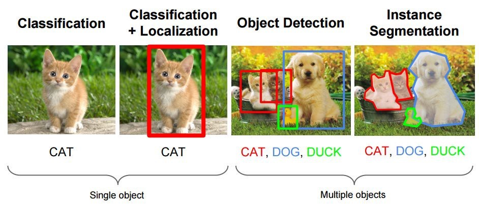
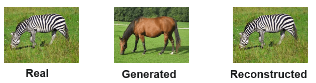

Conclusion¶
And one last thing … (just like Steve Jobs)¶
Before you go, we want you to know a few more things which will help you to realize how everything that you have learnt so far, is used in real life to solve problems. OpenCV also provides support for building GUIs. You can create and manipulate windows, add trackbars to the windows, handle simple mouse events as well as keyboard commands. We have aleady seen how we can caputure key press from keyboard.
Here are some demo applications that we have built for you.
Here are some more applications that are not GUI based, but are very interesting:
Authenticate office employees: Office In time scanner. Both scanning timing and person’s name gets saved in a new file. This is how the final output looks.
Note: we will keep adding more applications to these sections.
Here is a complete list of commands that exist in OpenCV for working with GUIs. Try building your own apps for better understanding.
Project¶
Building projects is a great way of learning and exploring new things. Projects also help you to understand the process of Software Development in a broader way. We highly recommend developing project. For now, we have some assignments to get started. Our mentors will be happy to help you in the process.
Until now, you have been building small applications (with 2-3 intermediate task). Lets try to build something big, something that has 5-6 intermediate tasks. The project will help you develop your skills like planning your projects, breaking it down to smallers tasks, combining the inputs and outputs from different tasks and a lot many things.
Sudoku solver¶
The task is build an application that would take a sudoku puzzle as input image and return a solved puzzle. Its an amazing application to build because it covers everything (almost) that we have learned in the course. Building this project is the ultimate test for your newly acquired skills. The final output should look like this.
Here is a reference blog to help you. We really hope that you will learn a lot while building this project.
Things to learn next¶
We have touched most of the corners of OpenCV but there are many more libraries in python for working with images. Some of them are really good and you should definitely check them out:
skimage: we have already used it to extract HOG features in the digit classification task. It has many more algorithms for image processing.
PIL: is another great python library for working with images.
The field of computer vision is much more than applying filters and extracting features. Computers are now good at a lot of image tasks and are having huge impact in peoples life. Computational protography, self driving cars, drones and robots, object tracking, security systems, etc are all examples of computer vision in action.
All the state-of-the-art models, in all the above mentioned tasks, use deep learning. Deep Learning has proven itself again and again in all the computer vision tasks.
From deep learning prespective most of the computer vision tasks belongs to one of these 4 types:
Classification
Localization
Object detection
Segmentation
Look at the image below to understand what each of these task means

The multi object tasks (detection and segmentation) were considered very hard problems. But with deep learning, the state-of-the-art models can detect 100s of object in a frame and can process 40-50 such frames per second. This is much more than what we humans are capable of.
There are many other applications of deep learning (with images) like:
Image captioning: Given an image, the deep learning model will describe it in words.

Image generations: With the help of GANs, you can generate new images. Deep Fake, image inpainting, super-high resolution are all applications of the same. The very famous faceapp also used GANs to make you look old.

Instagram, snapchat and every other photo app makes extensive use of deep learning.
Just like Computer Vision, we have full fledged courses on Deep Learning. You will be implementing everything that we mentioned above, in fact the above content is from the introduction notebook. We really recommend you to check our Deep Learning Course. We will be happy to help you in the process, again!
Keep Learning, Keep Growing!